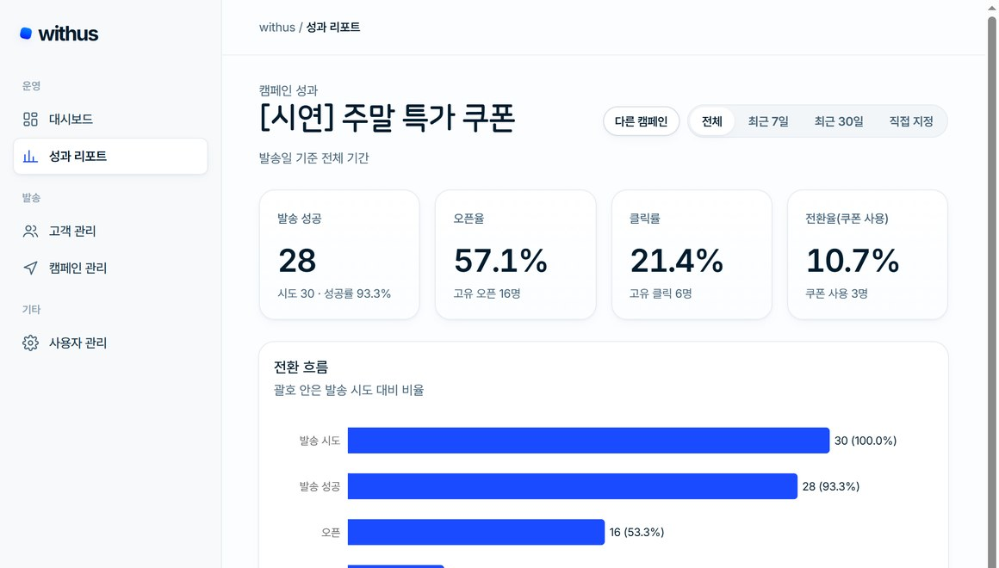
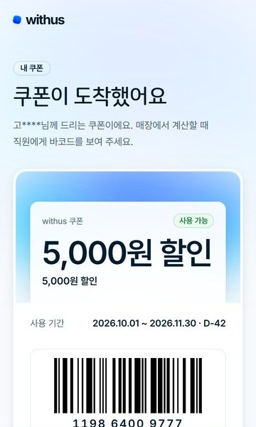
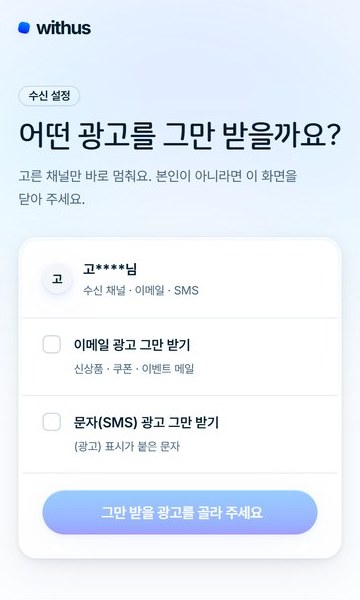
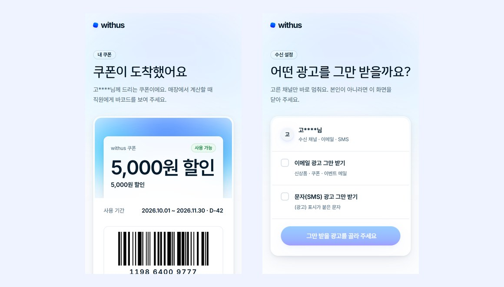
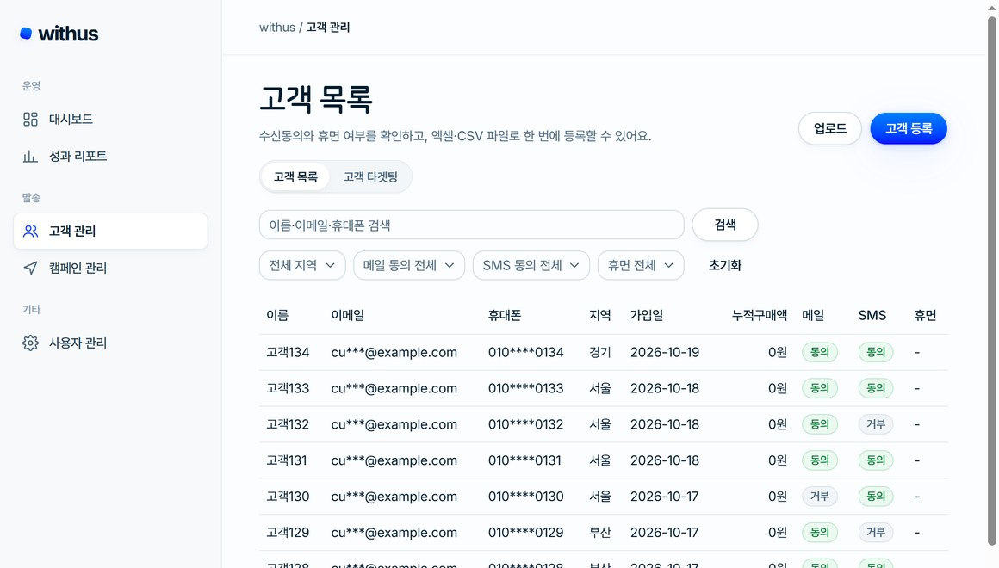

WITHUS
고객을 타겟팅으로 묶고, 트리거부터 발송·추적까지
자동으로 실행하는 CRM 마케팅 솔루션
MY ROLE 전환 구간 프론트엔드 · 사이트 디자인 4인 팀(PL 1 + 팀원 3) — 대시보드 · 성과 리포트 · 쿠폰 화면 담당

관리자는 노트북에서, 고객은 휴대폰에서



명단 · 발송 · 쿠폰을 하나의 흐름으로
마케터가 엑셀 · 문자 사이트 · 쿠폰 툴을 오가던 일을 한곳에서 해요. 고객을 조건으로 묶고, 워크플로우로 메일 · SMS를 보내고, 반응과 쿠폰 사용까지 추적해요. 팀은 고객 · 발송 · 전환 구간으로 나눠 만들었고, 저는 전환 구간을 맡았어요.
제가 만든 화면
- 발송 · 오픈 · 클릭 · 전환 KPI 카드 4개와 일별 발송 차트
- 최근 7일 · 30일 · 직접 지정 기간 필터 3종 (최대 366일)
- 워크플로우 단계별 성과 표와 전환 흐름 차트
- AI 성과 요약 카드 (생성 · 재생성), 목록은 상태 필터 · 페이지

- 고객 쿠폰 페이지
/c/[token]— 12자리 바코드 - 매장 사용 처리
/coupons/redeem· 쿠폰 목록 · 생성

- 공통 디자인 토큰 · 한글 조판 토큰 · 기본 부품 제작
- 10/13 하루 18커밋 · 112파일 개편, 이전 디자인 키트 정리(−9,789줄)
프론트엔드 구현 포인트
새 라이브러리를 넣지 않기로 한 팀 결정에 맞춰 Code128 C 세트 패턴 표와 검사값 계산을 직접 구현하고 SVG 막대로 그렸어요.
usePeriodRange로 기간을 모으고 366일 초과는 요청 전에 막았어요. '오늘'은 서울 시간 기준이라 자정이 지나면 자동으로 갱신돼요.
쿼리 키는 query-keys에서만 만들어 캐시 무효화가 어긋나지 않게 했고, 필터 · 페이지를 바꿀 때 이전 결과를 유지해 깜빡임을 없앴어요.
공통 디자인 토큰과 기본 부품을 만들어 23개 화면 중 22개에 적용하고, 문장은 해요체 · 날짜는 점 형식으로 통일했어요.
리뷰를 거쳐 문제를 풀었어요
기간을 직접 고르는 중에 서버 오류(400)가 잠깐씩 떴어요.
366일 초과나 시작 > 종료처럼 틀린 기간으로도 요청을 보내고 있었어요.
필터에서 먼저 검사해 요청 자체를 막고 입력 칸 아래에 안내해요.
입력 중 오류 깜빡임이 없어지고, 불필요한 요청도 사라졌어요.
화면을 켜 둔 채 자정이 지나면 어제 날짜 기준으로 조회됐어요.
쿼리 키에 절대 날짜가 들어 있었고, 날짜도 브라우저 시간대 기준이었어요.
쿼리 키엔 기간 종류만 두고, 날짜는 조회할 때 서울 기준으로 계산해요. 새 라이브러리 없이 Intl로 처리했어요.
서울 자정에 자동으로 갱신돼요. 리뷰 지적 9건을 모두 반영해 승인받았어요.